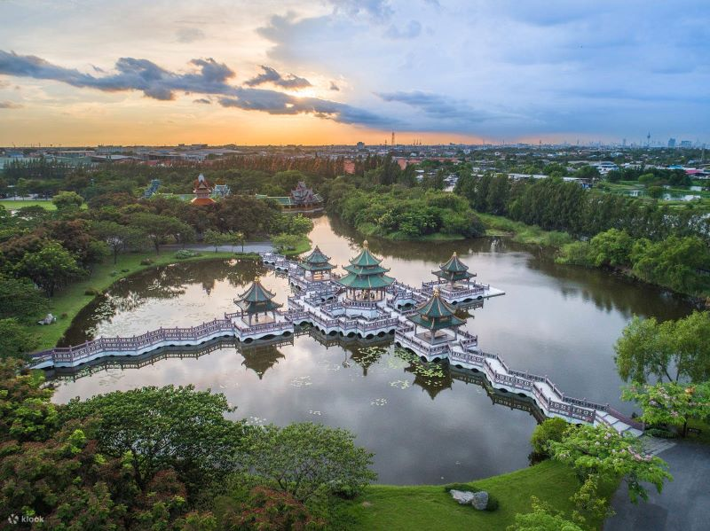

古城七十六府
這是一個將泰國76府著名的歷史建築遺跡與文化特色，依照真實比例縮小，打造成一個可說是全球最大型的戶外歷史博物館，是由Lek Viriyahphant先生和Praphai Viriyahphant女士於佛歷2506年(公元1963年)起建，這一次我實際造訪之後，覺得這裡的每一座歷史建築的雕工藝術實在是相當精湛，不論是外觀建築還是內部構造都頗具特色，而且裡面還有古市集可以逛，甚至還可以加購自助餐吃到飽，整個園區佔地頗大，來這裡待上大半天，甚至玩上一整天都很可以，到處都是好拍照的景點建築，相當值得一遊哦。
